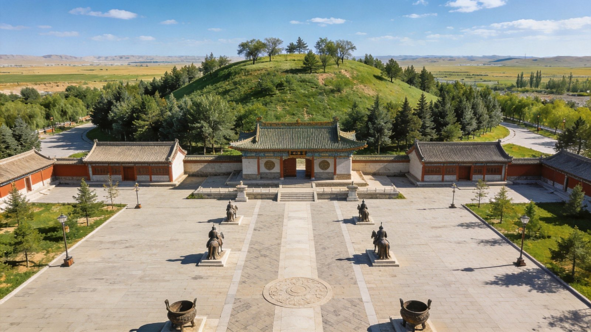
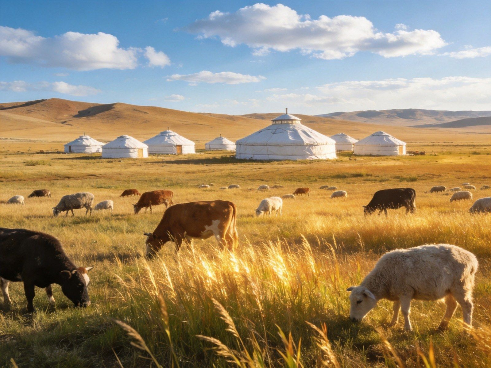
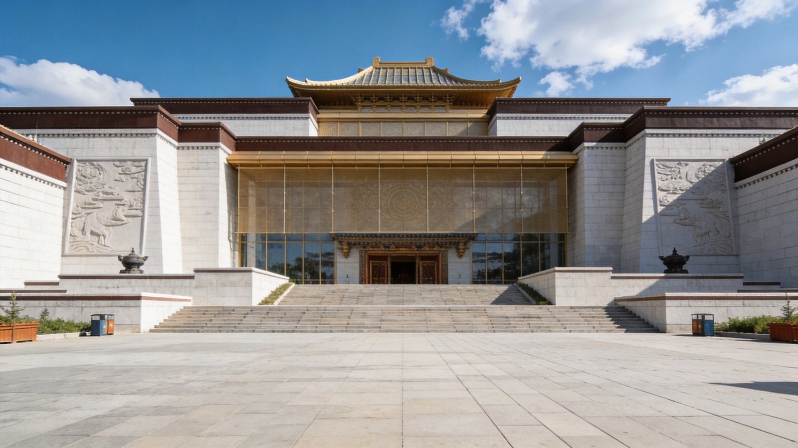
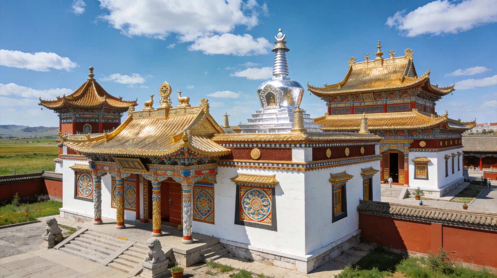
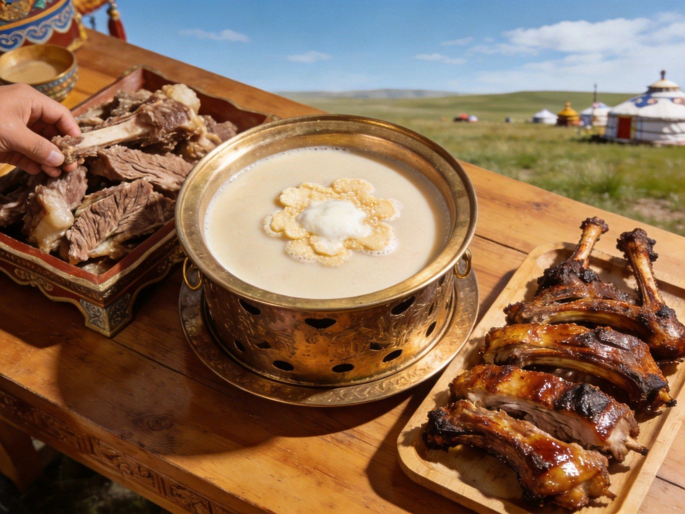

呼和浩特 · 塞上青城·敕勒川明珠
大召寺钟声回响青城 · 昭君青冢芳草萋萋 · 敕勒川草原辽阔苍茫
封面
总览
行前
DAY 1
DAY 2
DAY 3
四季
看点
美食
住宿
贴士
安全
WorldStip 旅行小册子
HOHHOT · 呼和浩特

塞上青城 · 敕勒川明珠
呼和浩特 · 青城
大召寺 × 昭君博院 × 敕勒川草原
藏传佛教
青冢拥黛
敕勒川草原
塞上风情
行程 · 自驾 · 住宿 · 美食 · 避坑
古城+草原 · 适合 2–4 天
1
/ 12
呼和浩特 · 青城
行程总览
一条青城草原线
Route & Rhythm
DAY 1
大召寺·塞上老街
青城古刹与市井烟火，宿市区
DAY 2
博物·昭君
内蒙古博物院 + 昭君博物院
DAY 3
敕勒川草原
约90km，蒙古包骑马看星星
DAY 4
返程
草原晨光后返回市区
TIP
古城+草原
兼顾人文与自然，2–4 天皆宜；草原多住一晚更尽兴。

敕勒川 · 天苍苍野茫茫
2
/ 12
呼和浩特 · 青城
行前准备
怎么去 · 住哪
Getting There & Staying
✈️ 飞机
呼和浩特白塔国际机场，直飞全国50+城市；距市区约15km，地铁/大巴可达
🚄 火车
呼张高铁接通北京(约2-2.5h到大同)、包头；呼和浩特站与东站均在市区
🚗 自驾
京藏高速(G6)、呼准高速(G5912)贯穿；包头约150km、北京约450km
🚇 地铁
地铁1/2号线已开通，串联主要景区与车站
🏨 住哪
市中心学府路/新华大街一带，逛街吃饭最方便
草原那晚住蒙古包体验

呼和浩特 · 旅程起点
3
/ 12
呼和浩特 · 青城
DAY 1 · 大召寺
Day 1 · 大召寺与老街
Old shrine & streets
D
1
大召寺·塞上老街
青城古刹·塞上烟火
抵达 → 大召寺 → 塞上老街 → 青城夜景 → 宿市区
🏛 大召寺
明代万历年间敕建，银佛殿内供奉巨大银质释迦牟尼
漠南最大藏传佛教寺院，寺前广场鸽群翔集
🛍 塞上老街
青砖老屋、驼队雕塑，酸奶奶茶手工艺品琳琅满目
感受塞上风情的漫步去处
TIP
寺内
着装得体、安静慢行
；黄昏的老街灯光最有味道。

大召寺 · 漠南圣殿
4
/ 12
呼和浩特 · 青城
DAY 2 · 昭君博物院
Day 2 · 昭君博物院
Tomb of Wang Zhaojun
D
2
昭君·博物院
青冢拥黛 · 和亲故事
市区 → 内蒙古博物院 → 昭君博物院 → 返回宿市区
🕊 昭君博物院
以王昭君墓(青冢)为核心，汉代风格园林苍松翠柏、绿草如茵
"青冢拥黛"位列呼和浩特八景之首
🏛 内蒙古博物院
造型大气，珍藏草原恐龙、契丹辽国、蒙古族历史文化珍品
理解辽阔北疆的窗口
TIP
两院相距不远可
一线串联
；上午博物院、下午昭君，错开人流。
青冢拥黛 · 芳草萋萋
5
/ 12
呼和浩特 · 青城
DAY 3 · 敕勒川草原
Day 3 · 敕勒川草原
Prairie of Chilechuan
D
3
敕勒川草原
天苍苍 · 野茫茫
市区 → 敕勒川/希拉穆仁(约90km) → 骑马住蒙古包 → 草原日落星空
🏞 敕勒川草原
"天苍苍野茫茫"的敕勒歌诞生地，向北便是辽阔草原
夏季碧草连天、牛羊成群，骑马、住蒙古包、看日落
🌌 草原星空
远离城市光害，夜晚银河横亘，篝火晚会相伴
TIP
草原
昼夜温差大
，厚外套必带；骑马听向导、穿运动鞋。
敕勒川 · 风吹草低见牛羊
6
/ 12
呼和浩特 · 青城
四季节点
什么时候去
When to visit
🌸
春(4–5月)
天回暖、风沙渐起，草原零星泛绿城市花开
☀️
夏(6–8月)· 草原最佳
敕勒川碧草连天、气候凉爽，避暑游草原黄金季
🍂
秋(9–10月)· 最佳
天高云淡、草原金黄，大召寺秋色肃穆宜人
❄️
冬(11–2月)
寒冷干燥、草原覆雪，宜城市文化游
推荐
最经典是
6 月–10 月
，草原正绿、避暑宜人。
一季一景 · 青城
7
/ 12
呼和浩特 · 青城
必去看点
这些地方别错过
Must-see spots
⭑ 精选看点
🏛
大召寺
漠南藏传佛教中心，银佛殿辉煌
🕊
昭君博物院
"青冢拥黛"，和亲历史名迹
🦕
内蒙古博物院
恐龙与辽金瑰宝，北疆窗口
🏞
敕勒川草原
"天苍苍野茫茫"的故乡
🛍
塞上老街
青砖老屋，塞上烟火小吃
🌿
希拉穆仁草原
牧民生活与草原星空体验
TIP
古城景点
市区步行/地铁可达
，草原需包车或自驾，天气好留草原。
草原与塞上 · 呼和浩特
8
/ 12
呼和浩特 · 青城
美食清单
一口吃进青城
Taste of the city
🥟
烧麦·稍麦
皮如纸薄羊肉馅足，青城晨间必吃
🥩
手把肉·烤羊
草原羔羊肉鲜嫩，原汁原味
🥛
蒙古奶茶
咸香浓郁，配炒米奶皮黄油
🥟
莜面
窝窝、鱼鱼蘸料，内蒙特色
🍲
羊肉汤·杂碎
暖身滋补，冬日首选
TIP
本地人扎堆
的老店更地道；稍麦配砖茶是青城晨间仪式。

城市烟火 · 青城滋味
9
/ 12
呼和浩特 · 青城
住宿怎么选
住得有青城味
Where to stay
🏙
市中心新华大街
近车站与商圈，逛街吃饭最方便
🚇
地铁沿线(1/2号线)
串联景区，通勤便捷省时
🏕
草原蒙古包
敕勒川/希拉穆仁，篝火+星空体验
🛌
老城区
烟火气浓，近大召寺与塞上老街
TIP
草原蒙古包住宿
提前 1–2 天订
；旺季草原房紧张需早抢。
青城夜宿 · 枕星入眠
10
/ 12
呼和浩特 · 青城
实用贴士
出发前记住这些
Good to know
🧥
温差
草原昼夜温差大，夏季也备薄外套、冬季保暖必备
🐎
骑马
防护到位、听教练指挥，不穿拖鞋
💳
现金
市区移动支付普及，草原景区带少量现金
📷
寺庙礼仪
着装得体、不大声喧哗、不随意拍照
🦟
蚊虫
夏季草原蚊虫多，备驱蚊液、穿长裤
⏰
日照长
傍晚落日晚，行程可排宽松
REMIND
呼和浩特与
包头/鄂尔多斯高铁相连
，可串成内蒙古草原人文大环线。
收拾好行囊 · 出发
11
/ 12
呼和浩特 · 青城
安全提示
玩得尽兴也安心
Stay safe
🚗
草原驾驶
草原土路雨后泥泞、夜间无路灯，控速、避免夜间长途
🐎
骑马安全
高风险项目，防护齐全、量力而行，勿擅离向导视线
⛈
天气多变
草原骤雨大风，带雨具、关注预警
🙏
寺庙礼仪
尊重习俗，不攀爬神像、不随意摄影
💰
贵重财物
景区人流密集，证件财物妥善保管
⚠️
牲畜安全
公路常见牛羊穿越，减速礼让、勿惊扰
塞上青城 · 愿你乘兴而往 🏞
12
/ 12
呼和浩特 · 青城 A5 卡片手册 · 由 WorldStip 定制
Insta360
记录美好
记录美好生活
相机指南 · CAMERA GUIDE